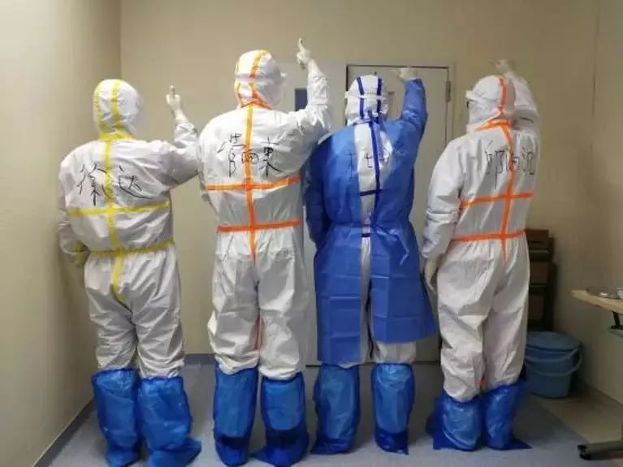
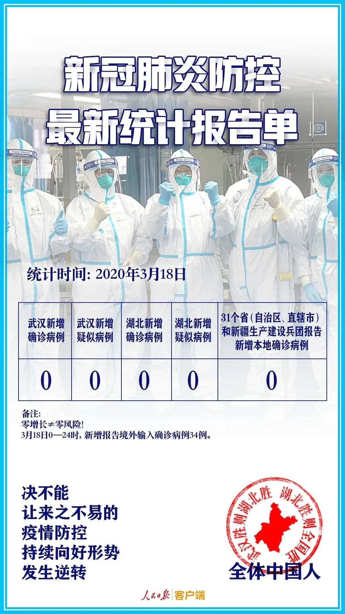

新冠肺炎重症病人救治难在哪？一线专家这么说
原文链接 备份链接 图片来源：视觉中国 记者：陈鑫 “ 专业人士认为，在新冠肺炎疫情初期，由于医学界对疾病的认识不够，医疗资源的配备跟不上，许多病人未能及时得到救治，最终发展成为重症病人，甚至走向死亡。 ” 新冠肺炎感染者从轻症发展到重 …

口述实录·火线

我们要想办法拖住重症新冠肺炎病人的生命，让他有机会去“熬病程”，要尽可能减少医源性的损害。
记者 | 黄 祺
在武汉迄今将近50天的时间里，管向东教授的职责被形容为“灭火队长”或者“最强大脑”，他总是出现在那些有难题的病人床前。
管向东教授是著名的重症医学专家、中华医学会重症医学分会主任委员、中山大学附属第一医院重症医学科主任。不过，除了上面这些专业上的头衔，最忙时一天要进两三个新冠肺炎ICU病房的管向东，更多的时候就是面对病人、面对生死的医生——他希望挽救每一个生命。
管向东教授
刚到武汉不久的管向东教授，曾在媒体的电话采访里“哭诉”。熟悉管教授的人都知道，他平日里乐呵呵、大嗓门，很少有人见他如此伤感。令58岁的管教授难过的是一位病人：“上午去查房的时候他还朝我们敬礼、打招呼，下午去就走了，哎呦……”
七尺男儿的泪，为了不治的病人而流。
最近，湖北疫情趋于好转，春光重现时节，由管向东教授作词、多位援鄂重症医学医护人员演唱的《我希望》制作完成。“今夜疾风雪舞，长江不见了归帆，我看见生命的脆弱，我幸运，我和他们相伴……我希望把生命继续点燃，让生命在阳光下灿烂……”歌声响起，让人泪目。
管向东教授作词，20多位一线医护人员演唱的《我希望》
3月18日，湖北迎来一张四个“0”的成绩单，武汉新增确诊病例0、武汉新增疑似病例0、湖北新增确诊病例0、湖北新增疑似病例0，此外，全国31个省、自治区、直辖市和新疆生产建设兵团新增本地确诊病例也是0。
交上五个“0”成绩单这一天，管向东教授向《新民周刊》回顾了他所经历的、湖北新冠肺炎疫情最艰难的时刻。
曾经哽咽，如今歌唱
《新民周刊》：国内疫情已经大大缓解，最近您还有什么任务？
管向东：我刚刚结束新一轮的巡查回到武汉，这一次去了十堰、宜昌、襄阳和仙桃。湖北现在的疫情可以说已经大为缓解，湖北全省除武汉市以外地区已经连续两周无新增确诊病例。不过疫情还没有完全结束，就像考试，我们还没有拿到100分。
这些城市医院里还有一些病人，虽然人数已经很少了，但还是有危重型的病人。这些危重型的病人，必须要控制住病死率。目前十堰市只有一例危重型病人，上了ECMO。襄阳只有两例危重型病人，宜昌也只有两例危重型病人。这三个武汉周边的大城市，危重型病人加上普通型病人一共大约还有50位左右确诊新冠肺炎病人。
这里我要特别纠正一下，按照新冠肺炎诊疗指南，新冠肺炎病人分为轻型、普通型、重型和危重型这四类，现在很多人，包括医生，把名字都给叫乱了，不够规范。重型和危重型病人，主要指的是要依靠医疗措施救治的病人，特别是危重型病人需要生命支持的措施。
《新民周刊》：一些医疗队陆续撤离湖北，您还要留多久？
管向东：我是国家卫健委专家组成员，根据目前情况，撤离需要看重型与危重型病例数与救治状况，在最后完成任务之前，至少还有一个月时间，我们专家组应该不会撤。

管向东教授在病房中指导
《新民周刊》：巡查都是要进隔离病房的吗？
管向东：巡查当然要进病房啊，昨天一天我进了两次，有时候一天巡查三家医院，就进三次隔离病房。
现在湖北天气热了，里面穿得少，穿上防护服里面也还是湿透了。之前天冷就更麻烦，衣服湿了不仅是难受，还特别怕感冒发烧。要是感冒发烧，我可就说不清楚了，要影响工作。
《新民周刊》：您到湖北已经将近50天，从最寒冷的季节，到现在春天也到了，疫情也好了。最近发表的歌曲，是不是表达了您心中的感慨？
管向东：写这个纯属有感而发。我以前从来没有写过歌词，也没有写过诗。
2月14日那天湖北突然降温，很快就暴雪连绵、大风狂刮。那几天武汉新冠肺炎病人死亡的比较多。我正好在武汉的医疗点巡查，督促医疗点治疗的同质化，就是让大家的医疗行为、救治行为质量统一。
巡查的时候，我偶然看到一个护士小姑娘蹲在楼道里吃饭。那样的天气，医院里死去的病人比较多，医护人员那么艰苦，我的心情不可能好，回到宾馆就写了这些歌词。
我想描述一下看到的这些人，特别是医护人员，他们也都是很普通的人，有自己私人的想法，但疫情发生后他们都义无反顾地来了。我们都期盼着自己的工作能起成效，能为抗疫做些贡献。我们也希望疫情早点过去，大家都能够回家。
我的两位朋友，看到歌词后很受感动，他们和影视音乐圈都很熟悉，于是紧急联系了著名音乐人解承强作曲，大家决定共同来完成这部第一次由抗疫一线医生们自己演唱的作品，这也是首次用手机演唱录音、远程完成后期制作的作品。
《新民周刊》：可能是因为疫情缓解，大家心态都放松了，听这首歌更多的是感觉到希望和力量。您之前有一次采访中哽咽，能感受您巨大的压力。
管向东：我是2月2日到武汉的，那几天可以说是最糟糕的阶段。可以说武汉当时经历的是“遭遇战”，很多病人住不了院，他在家里，在社区里造成新的传播。所以那段时间院内和院外的死亡比较多。
我巡查各家医院，天天接触这些情况。还好后来方舱医院和各个医疗点开出来，一下子增加了两三万张病床，病人都得到收治了。
新冠肺炎病人中70%-80%是轻型和普通型病人，但总有一部分患者会走到重型和危重型。如果到了危重型，死亡率是非常高的，要达到70%。我们希望通过努力，尽量控制死亡率，但有的病人不是说你使了劲他就能有效。那次采访讲的就是当时的那种无奈。
广州日报采访视频
重症病人救治经验分享给国外同行
《新民周刊》：后来重症病人的病死率逐步降低，主要有哪些原因？
管向东：到了2月中旬，从救治上来说，有了新的策略。“四个集中”的原则就很重要：集中患者、集中专家、集中资源、集中救治。所有的重型、危重型的病人转到10家左右的医院集中救治，不像之前很多医院都有。重病人迅速归纳和集中到了10家左右条件比较好的、而且有外地医疗队支援的医院中之后，病死率很快就稳定下来了，2月下旬重型病人救治情况就开始趋于好转。

管向东教授与杜斌、邱海波等专家一起在武汉工作
《新民周刊》：救治新冠肺炎重症病人的过程中，专家组不断总结临床经验，这些经验如何指导各个医疗队救治实现同质化？
管向东：这次在湖北支援的4万多医护人员里，有将近15000人来自于重症医学的专家、医生、护士，全国的重症医学专家很多都在这里。特别是疫情早期、春节前就来的一群重症医学专家，他们接触病人已经半个月以上，有丰富的临床经验。我们这些重症医学专家把临床经验整理出来，形成一个共识。
我会同北京协和医院内科ICU杜斌教授、东南大学附属中大医院重症医学科邱海波教授等国家级专家以及一批在武汉的重症专家们，根据这些共识编写了《新型冠状病毒肺炎重型、危重型病例诊疗方案》，由国家卫健委、中医药管理局下发到湖北和全国各地。我们的方案非常实用，可以指导医生比较容易地掌握救治的方法和思路。
国家卫健委《新型冠状病毒肺炎诊疗方案(试行第六版)》开始采纳了我们这个方案里的一部分内容。最近，国外同行希望我们能够把这个共识翻译成英文，他们希望跟我们合作，获得中国重症医学医生们的经验。我们已经把英文版交给了对方，毫无保留。
《新民周刊》：作为重症医学专家，您怎么评价这次疫情中中国的重症医学专业力量？
管向东：通过疫情我们可以看到，重症医学学科力量需要进一步加强。重症医学科从2008年开始成为一个二级学科，但是由于种种原因，我们的住院医师规范化培训里，至今没有重症医学科的住院医师规培，是目前唯一没有纳入住院医生规培体系的二级学科。入职重症的毕业生（多为硕士博士）只能到其他专科进行住院医师培训，但其他专科的培训内容和重症医学专业的要求还是有差距的，这次疫情中的救治表现充分展示了重症专业人员的专科重要性。因为人才基础薄弱，重症医学整体的学科建设也受到了很大影响。另一个问题是，在一些医院里，医院把ICU当做某个科室下的一个附属的科室，这也会限制这个医院重症学科的发展。
这次疫情中，我们也发现，各家医院重症医学专业能力参差不齐。有的医院不一定是高级别的医院，但救治能力表现很好。
武汉周边城市病死率是怎么降下来的
《新民周刊》：您有一个很重要的任务是巡查武汉周边城市的救治情况。2月8日前天门市病死率是全省最高的，后来迅速下降。2月8日正是您去巡视的这一天，这中间到底发生了什么？
管向东：2月8日之后天门市病死率下降这个是真的，但并不能说都是我的功劳。2月8日是元宵节，那天我接到指挥部的任务，需要去天门市了解当地情况。人们非常关心，天门市的病死率为什么第一？而且死亡的病人里面还有30多岁的年轻人。
去之前我怀疑是不是没有及时插管有创通气，去了一看，果然是没有及时做插管通气。原因是多方面的，有救治方法不确定的原因，也有防护物资不到位大家恐惧的原因，我们不可能让医护人员冒着生命危险去做。我去的时候，他们的ICU已经开始收治病人，并开始了插管有创通气。
到天门市的医院后，我主要强调了插管的重要性，把整个治疗思路给他们。治疗思路很重要，一旦明确治疗思路以后，大家都知道该做什么了。
新冠病毒至今没有特效药，不像细菌感染通常是有药的，比如说金黄色葡萄球菌感染，用上抗生素，三天杀死细菌病就好了。
但新冠肺炎的治疗，不要以为病人是我们治好的，对付这个病毒，我们医护人员能做的就是帮助病人去“熬病程”，让体内的抗体出来消灭病毒，恢复正常的身体状态。所以我们要想办法拖住重症新冠肺炎病人的生命，让他有机会去“熬病程”，要尽可能减少医源性的损害，是这样的一个过程。这就是我们说的救治思路。
在这个过程中间，该插管通气的就要插管，该增加免疫力的增加免疫，该少用免疫抑制剂的就少用一些或不用。
我去之前他们的ICU病区开始收那些危重型和重型的病人，再加上我去做了一些指导，那天之后半个月真的只有一个病人死亡。这不能说全是我的原因，只能说大家对治疗思路的认识改变后，救治方法有了变化。

《新民周刊》：疫情早期我们一度预测武汉周边城市疫情将比武汉更严重，但最后的结果是周边城市更早控制住疫情，这是什么原因？
管向东：昨天这一轮巡查我也在观察，发现武汉周边城市，比如十堰市，它的医疗水平可能平时就处在一个比较好的水平，他们医护团队素质挺好的。还有就是疫情中的城市管理应该说也比较好，我们到每一个城市巡查，市领导都非常重视，要听我们专家组的建议，听我们讲解医疗过程，怎么样采取措施，他们很认真。
上一轮巡视吓我一大跳，荆州、荆门、孝感，有的城市已经十多天新收治确诊病人为零了。这个数据意味着这些城市后面做的工作就是消化医院内的病人，那就快了。
可以看到，采取强有力的联防联控措施后，疫情控制有了明显的成效，这说明我们的措施是非常正确的，每一步都没有走错。传染病是一场看不见硝烟的战争，相信我们的国家在经过这一次疫情后会更加强大。


新民周刊所有平台稿件， 未经正式授权
一律不得转载、出版、改编或进行
与新民周刊版权相关的其他行为，违者必究


原文链接 备份链接 图片来源：视觉中国 记者：陈鑫 “ 专业人士认为，在新冠肺炎疫情初期，由于医学界对疾病的认识不够，医疗资源的配备跟不上，许多病人未能及时得到救治，最终发展成为重症病人，甚至走向死亡。 ” 新冠肺炎感染者从轻症发展到重 …
原文链接 备份链接 这是汪玮意大利疫情记录第11篇（3月16日）。 最近几天没有太多心思去思考别的。我的脑子好像被数字和新闻填满了，再没有空间想别的。我被数据彻底掌控了。 这很正常，当你看见那些不断上升的死亡人数、死亡率、确诊人数，你总是 …
原文链接 备份链接 荷兰人平时看起来甚至有些淡然，不像南欧人那么热情浪漫。但到了需要帮助别人的时候， 一般都会尽力而为，不带附加条件。 文 | 王巧丽 正视新冠病毒的第一天 晚上7点钟， 荷兰人守在电视机前， 等着首相马克·吕特讲话。 …
原文链接 备份链接 “相关国家要抓住疫情防控‘窗口期’”——这句话，世界卫生组织总干事谭德塞说了很多次，最早的警告，是在中国新冠肺炎疫情还十分严重的2月初。然而，他发出的警告，似乎并未让更多国家采取必要的行动。 2月4日，谭德塞在日内瓦 …
原文链接 备份链接 本 文 约 3700 字 阅 读 需 要 8 min 在本文的开头，首先有必要让读者明白，作者的讲述绝非完全可信。 我在意大利住了十多年，又是媒体记者，这次意大利疫情爆发以后，很多媒体都来找我，甚至有人愿意出丰厚的稿 …